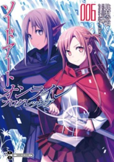
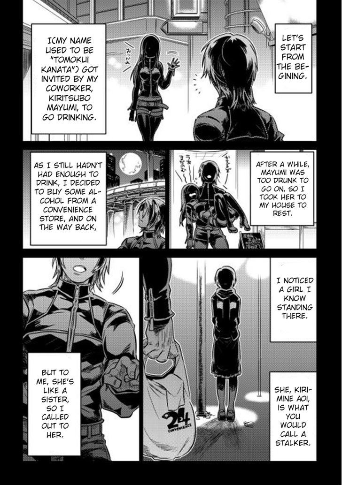
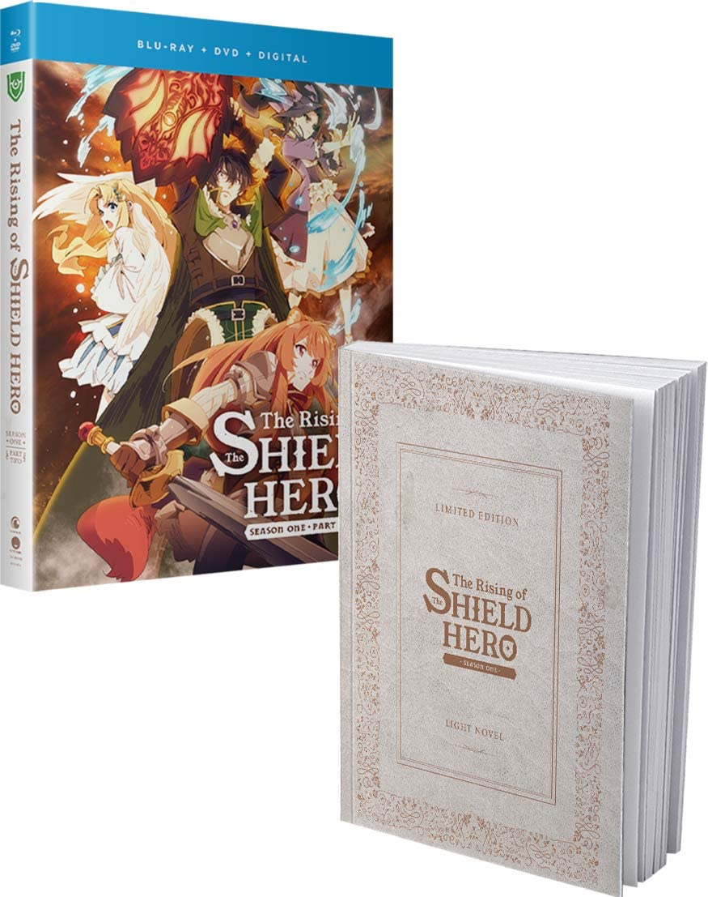

5: Tsuyokute New Saga

Ratings : 🌟 7.4
English Name : Be Stronger! New Saga
Genre :AdventureFantasyMagicShounen
Volumes : 8
Chapters : 136
Publishing Date : Feb 20, 2014
Written by : Jun Miura
Synopsis:
At long last, the demon invasion is over. The hero Kyle Lenard has struck down the Demon Lord with the aid of his companions and brought peace to the land. Although the fighting is finished, the land is in ruin. Most of the heroes have fallen one by one, leaving a mortally wounded Kyle as the only survivor. With his strength fading, Kyle accidentally activates a mysterious artifact within the slain Lord's lair and is sent back in time to a few years before the conflict. Suddenly gifted with a second chance, Kyle reunites with his friends Seran the swordsman and martial artist Riize. The group must once again rally together a fighting force and use Kyle's knowledge of the future to prepare the world for a war no one else knows is coming.
4: Sword Art Online
Ratings : 🌟 8.1
English Name : Sword Art Online
Genre : ActionAdventureFantasyGame
Volumes : 25
Chapters : ?
Publishing Date : Apr 10, 2009
Written By : Reki Kawahara
Synopsis:
In the year 2022, gamers rejoice as Sword Art Online-a VRMMORPG (Virtual Reality Massively Multiplayer Online Role Playing Game) like no other-opens its virtual doors, allowing players to take full advantage of the ultimate in gaming technology: NerveGear, a system that allows users to completely immerse themselves in the game world by manipulating their brain waves to create a wholly realistic gaming experience. But when the game goes live, the elation of the players quickly turns to horror as they discover that, for all its amazing features, SAO is missing one of the most basic functions of any MMORPG-a log-out button. Now trapped in the virtual world of Aincrad, their bodies held captive by NerveGear in the real world, users are issued a chilling ultimatum: conquer all one hundred floors of Aincrad to regain your freedom. But in the warped world of SAO, "game over" means certain death-both virtual and real...
3: Re:Monster
Ratings : 🌟 7.6
English Name : Re:Monster
Genre : ActionAdventureFantasyMagic
Volumes : 4
Chapters : 67
Publishing Date : JMar 27, 2014
Author : Haruyoshi Kobayakawa
Synopsis:
Tomokui Kanata has been re-incarnated in the weakest goblin, named Goburou, after having undergone an unfortunate death. However Goburou has retained his previous life's memories, an unusual evolution, as well as becoming strong enough to gain status boosts from eating.
In this alternate world of survival of the fittest, events unfold with competent subordinates and comrades, delightful case of the tail-wagging dog...
2: Log Horizon

Ratings : 🌟 8.1
English Name : Log Horizon
Genre : ActionAdventureFantasyMagicSci-Fi
Volumes : 11
Chapters : 65
Publishing Date : Apr 13, 2010
Author : Mamare Touno
Synopsis:
"Elder Tale" is a long-established and popular online game: but the day in which was introduced the 11th expansion pack, 30,000 Japanese users have been confined to the world of the game. In the world that is a fusion of reality and the game, our hero Shiroe begins his fight from the city of Akiba.
1: Tate no Yuusha no Nariagari
Ratings : 🌟 8.2
English Name : The Rising of the Shield Hero: The Manga Companion
Genre : DramaFanatsySeinen
Volumes : 18
Chapters : 73
Publishing Date : Feb 5, 2014
Author : Aiya Kyū
Synopsis:
Twenty-year-old otaku Naofumi Iwatani is mysteriously transported to the otherworldly kingdom of Melromarc. Appearing before the King, Naofumi and three other summoned individuals learn that they are each one of the Four Cardinal Heroes who are tasked with defeating the malicious "Waves of Catastrophe."
However, Naofumi is given only a measly shield and dubbed the "Shield Hero," the weakest of the Four Cardinal Heroes. Owing to his lack of power, none of the kingdom's mercenaries wish to aid him, except for the country's beautiful princess, Malty Melromarc. But Naofumi soon awakens the next day to find himself robbed of all his possessions and falsely accused of rape by Malty.
Due to his status as a Cardinal Hero, Naofumi is not executed, but instead, his erroneous crimes are made public. Struggling to find hospitality, Naofumi buys a demi-human slave girl named Raphtalia to aid his endeavors, and embarks on a perilous journey to deliver retribution to those who ruined him, learning the secrets of this new world along the way.